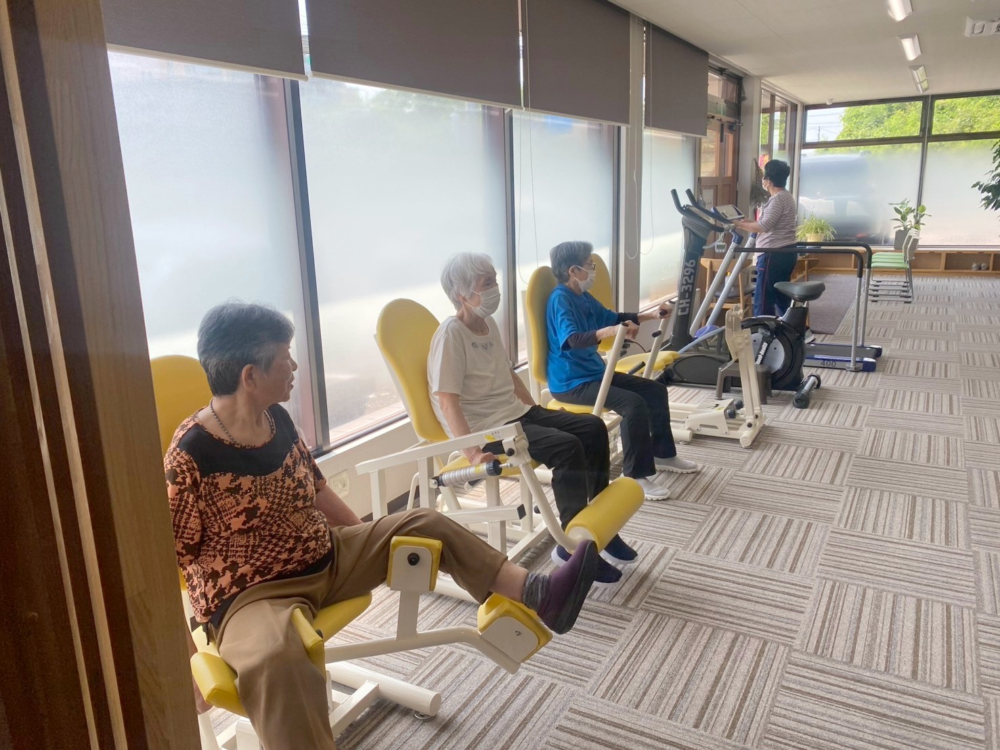
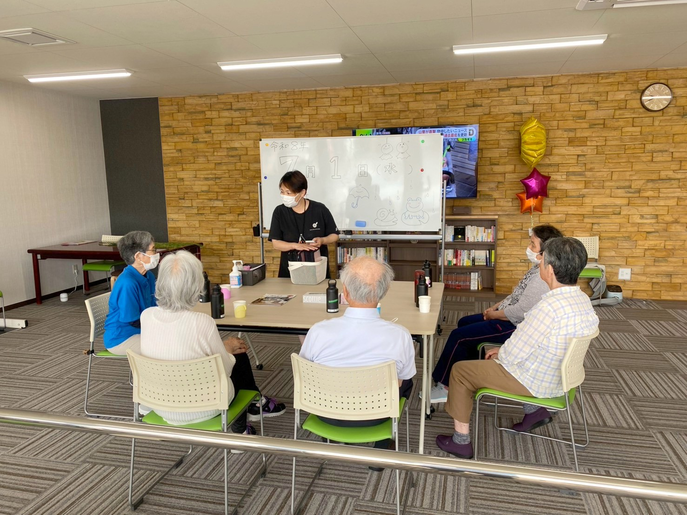
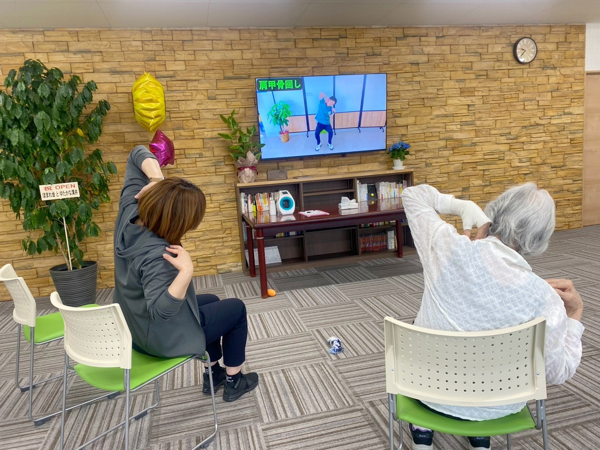

中面①
OUR PHILOSOPHY
動くから 変わる
歳を重ねるほど、痛みや不安から動かなくなる時間が増えていきます。けれど、動かないことが筋力の低下を生み、関節の硬さや新たな痛みにつながっていく ─ これが、廃用症候群のはじまりです。
poem de reha は、その悪循環を「動くこと」で断ち切るリハビリ専門デイサービスです。マッサージで一時的に楽になるだけではなく、身体そのものを動ける状態に戻していく。半日のしっかりした運動と楽しい脳トレで、暮らしを取り戻すお手伝いをします。
こんな未来へ
01
椅子から、自分の力で立ち上がれる。
太もも・お尻の筋肉を鍛え、立つ・座るの動作を楽に。
02
家の中を、転ばずに安心して歩ける。
バランス力を保ち、転倒の不安を減らします。
03
孫と手をつないで、公園を散歩できる。
立つ・歩く力を取り戻し、外出への自信を育みます。
04
好きなことを、また始められる。
楽しさと達成感が、心の元気もよみがえらせます。
リハビリは目的ではなく、入り口。
その先の「いつもの日常」が、目指す場所です。
その先の「いつもの日常」が、目指す場所です。
中面②
3つの柱

01マシーントレーニング
高齢者の体格や筋力に配慮した専用マシン9種。負荷を細かく調整でき、無理なく安全に筋力を取り戻せます。

02楽しい脳トレ
動画を見ながらの間違い探しやクイズ形式。身体と頭を同時に使う二重課題で、認知機能の維持をサポートします。

03AI解析プログラム
AI解析によるオリジナル体操を毎日実施。常駐の柔道整復師が、その日に最適な運動をご提案します。
トレーニング機器（9種）
チェストプレスレッグエクステンションレッグプレスアブダクションエアロバイクトレッドミルプーリー平行棒メドマー
中面③
半日の流れ・ご利用案内
午前の部 ／ 午後の部
9:0013:25送迎・受付ご自宅までお迎え
9:1013:35バイタルチェック血圧・体調確認
9:1513:40AI解析体操準備運動・ストレッチ
9:3013:55マシーントレーニング個別メニュー
10:3014:55脳トレ・個別ケアクイズ・休憩
11:3015:55クールダウン整理運動・水分補給
12:0516:30送迎ご自宅までお送り
午前の部 9:00〜12:05 ／ 午後の部 13:25〜16:30
営業日：月〜金（祝日も営業）／ 休業：土・日・年末年始（12/31〜1/3）
営業日：月〜金（祝日も営業）／ 休業：土・日・年末年始（12/31〜1/3）
| 対 象 | 要支援1・2の方（郡山市・須賀川市） 要介護1〜5の方（原則郡山市） ※ご利用者は要支援の方が約6〜7割です |
|---|---|
| 料 金 | 介護保険適用／1割〜3割負担 ※詳細は介護度・加算により異なります |
| 定 員 | 10名（開所時。順次18名まで拡大予定） |
| 送 迎 | ご自宅まで送迎あり（郡山市・須賀川市） |
見学・無料体験 受付中
TEL024-954-5586
担当：豊嶋（とよしま）
FAX 024-954-9373 ／ 体験は1回無料
介護のご相談だけでも歓迎です
FAX 024-954-9373 ／ 体験は1回無料
介護のご相談だけでも歓迎です
お問い合わせフォーム